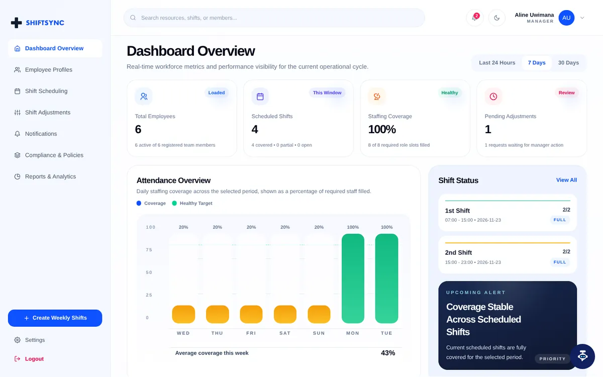
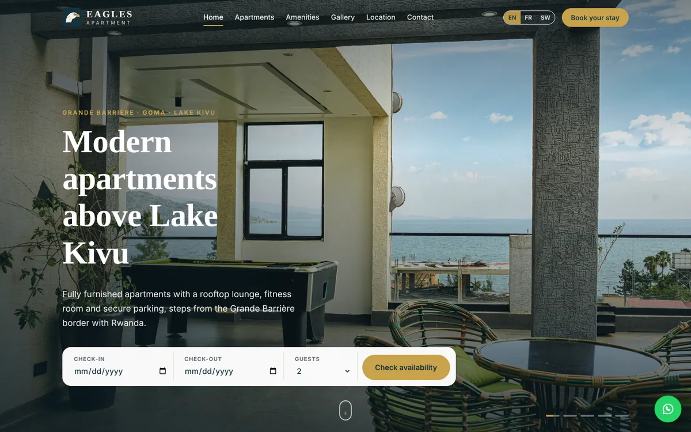
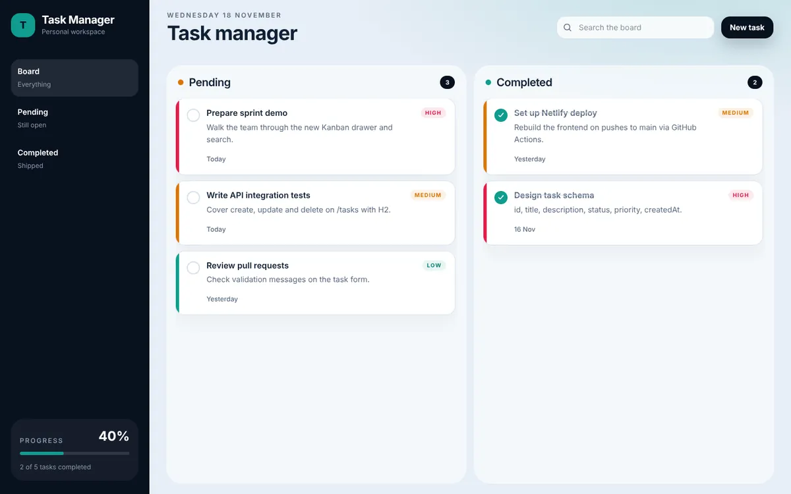

Featured project
Akazi
A job board for Rwanda. It gathers openings from 33 public employer career pages, sorts them by place and job function, and emails alerts to subscribers. Applicants still apply on the employer’s own site.
Selected projects
Five projects I designed, built and shipped, from a live job board for Rwanda to a multilingual website for a real business.
Featured project
A job board for Rwanda. It gathers openings from 33 public employer career pages, sorts them by place and job function, and emails alerts to subscribers. Applicants still apply on the employer’s own site.

Workforce management for pharmacy teams: weekly scheduling with auto-assignment, payroll estimates, time-off and shift-swap requests, and separate admin, manager and employee workspaces.

A community blog where people read and publish stories. Authors get an AI writing assistant that suggests titles, summaries and tags, with a daily limit per user.

Website for furnished apartments in Goma, DR Congo, in English, French and Swahili, with a booking form, photo gallery and WhatsApp contact.

A Kanban task board with priorities, search and status filters, backed by a Spring Boot REST API with Swagger docs, integration tests and automatic deploys.
More context